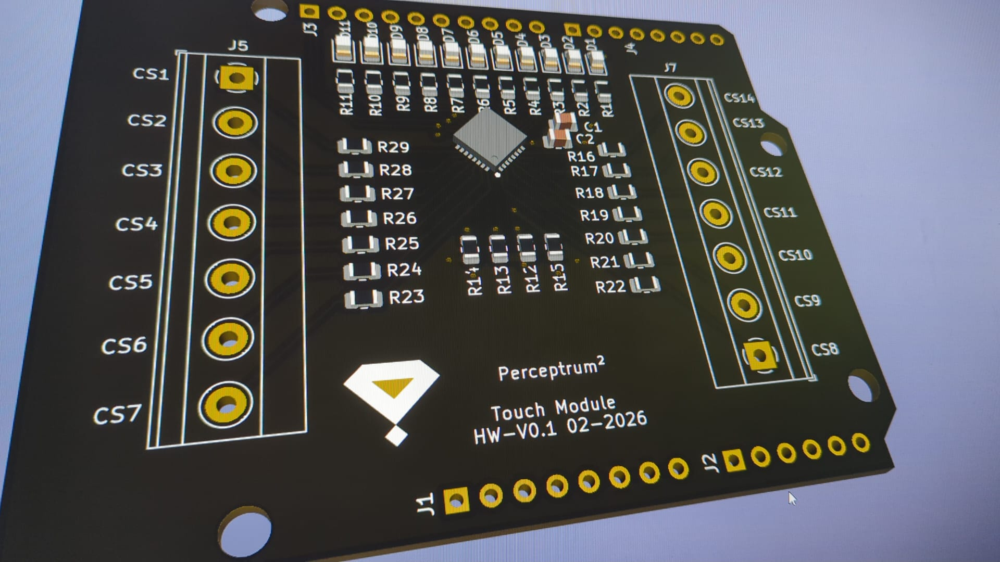

The transition from the Sounding Canvas to the Sounding Stage necessitated a fundamental rethink of our sensing architecture. While the CapacitiveSensor library served us well for individual artworks, the physical scale of a stage environment, featuring vertical curtains and horizontal floor planes, introduced physical constraints that software-based sensing could no longer compensate for.
In this context, sensing is not merely a technical requirement, but a core component of the performative language of the system.
2. Limitations of Software-Based RC Timing
In our previous reports, we detailed the use of 1.4 MΩ resistors and RC time-constant measurements. However, in the Sounding Stage, two primary physical limitations emerged:
Parasitic Capacitance: Long cable runs (exceeding 3–5 meters) required to reach stage boundaries behave as capacitive loads themselves. This baseline often exceeds the dynamic range of the Arduino’s digital sensing method.
Environmental Noise: Large sensitive surfaces act as antennas. In a stage environment, 50/60Hz hum from lighting systems and power amplifiers significantly degrades the signal-to-noise ratio (SNR).
These effects do not simply degrade performance; they fundamentally alter the temporal behavior of the signal, making it unsuitable for extracting higher-level features such as gesture velocity or spatial continuity.
3. Hardware Solution: The CAP1114 Controller
To address these issues, we designed a custom Touch Module Shield for Arduino Uno R3 (and compatible boards such as Arduino 2009). By offloading the sensing logic to a dedicated CAP1114-1-EZK-TR controller, we gained hardware-level signal conditioning that software-based approaches cannot replicate.

Perceptrum Touch Module Shield (HAT) for Arduino Uno and Duemilanove, based on the CAP1114 capacitive touch controller.
3.1 Dedicated Signal Processing
The CAP1114 integrates an Analog Front End (AFE) providing:
Automatic Calibration: The system continuously compensates for baseline capacitance introduced by long cables and large electrodes.
Digital Filtering: Built-in noise suppression reduces environmental electromagnetic interference (EMI).
14-Channel Density: A single shield manages 14 independent sensing channels (CS1–CS14), enabling scalable spatial segmentation of the stage surface and reliable detection across large areas.
This shift marks a transition from software-interpreted sensing to hardware-conditioned signals, ensuring consistent behavior across varying environmental conditions.
3.2 Level Shifting and Logic Safety
The CAP1114 operates at 3.3V logic levels, while the Arduino ecosystem commonly uses 5V. The module incorporates 2N7002 MOSFET-based bidirectional level shifters on the I²C bus (SDA/SCL), ensuring reliable communication without exposing the sensor to overvoltage.
4. Visual Feedback Integration
Interaction within the Sounding Stage is both auditory and visual. The module leverages the CAP1114’s integrated LED drivers to control 11 surface-mount LEDs (D1–D11).
This enables near-zero-latency feedback: visual responses are driven directly by the sensing hardware, without requiring a round-trip through the central processing system. The performer receives immediate confirmation of interaction, reinforcing the perception of a responsive environment.
5. Integrated System Architecture
The sensing system is interrupt-driven. The ALERT pin notifies the microcontroller only when relevant changes occur, reducing computational overhead and allowing the Arduino to manage higher-level interaction logic.
In this configuration, the sensing module acts as a local proprioceptive layer within the distributed sensing architecture of the Sounding Stage, maintaining responsiveness independently of the central audio engine.
6. Toward Sensing 2.0
While the CAP1114-based module provides a robust and scalable solution for large interactive surfaces, it remains primarily optimized for stable touch and proximity detection. The next phase of development focuses on extending the system toward continuous gesture sensing.
Future iterations will integrate dedicated capacitive sensing controllers such as the MPR121, positioned closer to the sensing surfaces to preserve signal dynamics. This will enable the extraction of higher-level features such as gesture velocity, directionality, and spatial continuity.